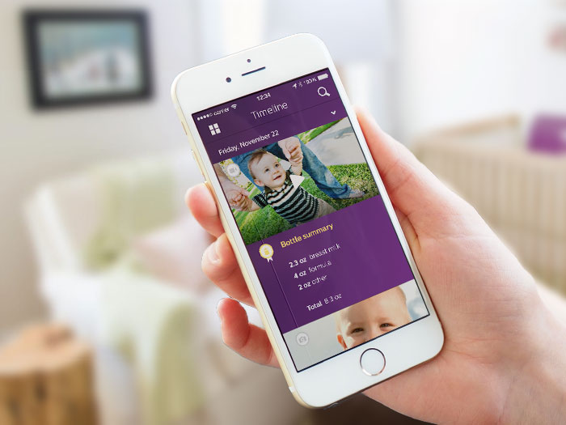
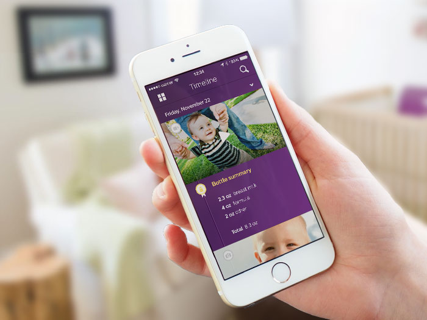

Monolith
A tool to help retailers take action and increase their in-store conversion.


Monolith
Monolith approached The Artificial to improve the clarity of their retail optimization service. We established a foundation that brings focus to users’ specific needs with a coherent suite of solutions without compromising the power of their service.
One of Monolith’s defining qualities is the artificial intelligence that provides actionable insights throughout the system. We designed a system that allowed the AI capabilities to shine at its current state, while also considering deeper integration for when qbrick gets smarter.
Our conversational method of visualizing data allows users to tell the product what data they want compared by using type-and-select fields. By eliminating the need for numerous selection fields and confusing categorizations, we shift the nuisance of interpretation from the user to the product, leaving our users free to concentrate on improvements.
How does the tool cater to those who are looking to take action and those who are looking to evaluate data? Our answer accommodates both by partitioning Monolith into a suite of solutions, with action-led and data-led tools both feeding in and supporting each other in one coherent UI. We ensured that the UI differentiates between the separate working spaces while focusing the user on the task at hand.
Sonicare Breath
A digital experience centered around animated visualizations designed to accompany a connected breath measuring device.


Sonicare Breath App
When Philips Sonicare decided to include a connected breath measuring device as part of their oral health offering, they approached The Artificial to help create an inspiring digital experience.
The challenge was to find a metaphor that was both visually interesting while also hinting at the mechanics of what the product was doing. At sketch fidelity, we quickly worked through dozens of options to narrow to the most motivating and on-brand visualizations.
After establishing the metaphor, we explored a handful of design directions, ranging from literal to representative, and flat to dimensional – ensuring that the client had a comprehensive view of possibilities. The result is a design direction that features a gentle animation of particles to mimic the activity occurring in the device.
From here, we established a basic interaction model that allowed for an expanding feature set. We mapped out how things such as historic data and oral health advice would be presented to the user, and are now working on expanding the flow.
Philips Avent uGrow
An app that collects data from a variety of connected devices to provide parents with insights and personalized advice.

 


Philips Avent uGrow app
At The Artificial, we worked with Philips Avent to create the app at the center of their uGrow platform. uGrow collects data from a variety of connected devices to provide parents with insights and personalized advice. The mobile app expresses this data through visualizations and adds a variety of manual trackers to the platform.
Philips wanted to create a scientific yet emotional experience to guide parents through their babies' development. We started by working closely with the internal team to define their product, balancing the needs of business stakeholders with the desires of users, all within the constraints of a tight development schedule. One of the most difficult challenges was designing a multi-faceted app that was easily navigable despite complex relationships between qualitative data, quantitative data, and advice content.
We created a design language that would appropriately show the feeling of baby, while maintaining the professional look of Philips Avent. The UI conveys trust and precision without being overly technical, and employs user uploaded content to add an emotional layer. Feeling that the UI still needed more delight, we created a handful of novel animations to bring more personality to the experience.
Travel Pong
A blog documenting a series of beer pong matches taking place in extraordinary locations through stories and photography.


Travel Pong
Travel Pong is a storytelling and photography project made in collaboration with Daniel Asplund. Our goal was to do something unconventional in an extraordinary place, in hopes that we would be the only beings to do so.
That thought ended up taking the form of Travel Pong – the pursuit of finding captivating places around the world where we can play intense games of beer pong. But it's beer pong with some bent rules and a blog to go with it, so we can strengthen our storytelling and photography skills while creating unforgettable memories. This is our way of pushing ourselves to not only travel and write more, but to see these extraordinary places in a new context.
We started by crafting granular yet flexible rules to appropriate the game to be considerate of our surroundings. I designed and built a tumblr theme to collect our games with a scoreboard to keep our audience up to date.
Matterhorn
An artist's book designed to capture the experience of viewing a three-dimensional sculpture in a two-dimensional booklet.


Matterhorn
A collaboration with artist Chad Attie to create an intimate artists' book that highlights his piece, The Matterhorn; a sculpture loosely based on Disneyland’s famous roller coaster ride of the same name. The idea was to create an experience reminiscent of a roller coaster, but with the ability to pause and explore the individual moments within the artificial mountain. The result is a 24-paged hand-bound booklet for Attie to distribute at various art shows.